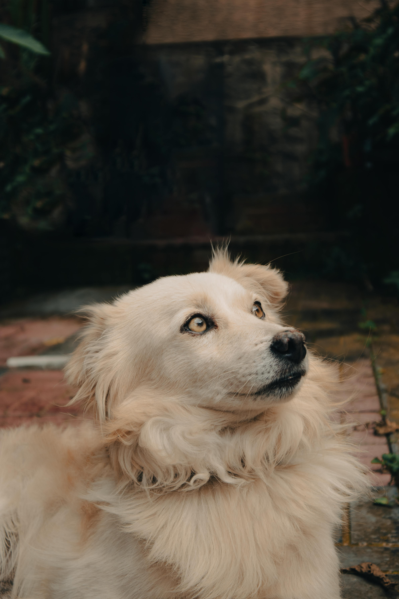

Spike
Segugio - 3 AnniTrovato vagante in una zona boschiva, Spike ha un istinto olfattivo eccezionale e adora i giochi di attivazione mentale. Al momento sta imparando ad andare al guinzaglio senza tirare. Cerca una casa con giardino o una famiglia che ami fare lunghe passeggiate ed escursioni nel weekend. È un cane incredibilmente fedele.